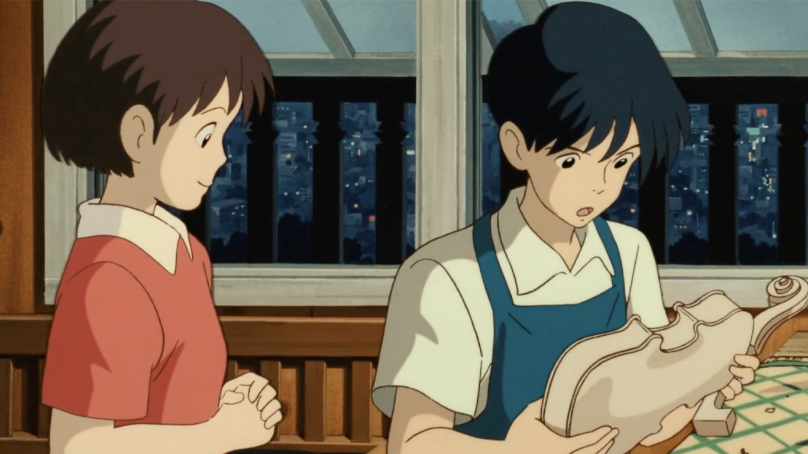
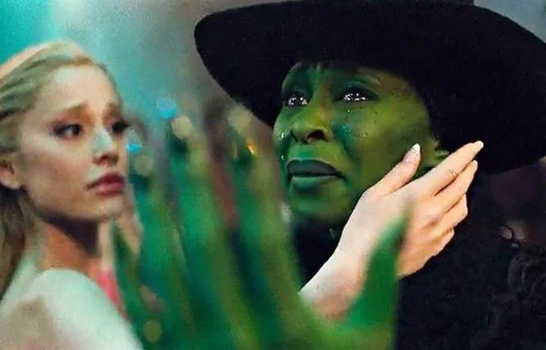

I look back exactly one year ago today and once again find a slight inflection in my thoughts.
Today is exactly on year since I made a penultimate decision to stay: to continue making more sacrifices instead of seeking comfort. I followed my brain over my heart. I rationalised it. I became smart. I chose dreams over love; because after all, love is for the stupid.
The reason why I want to revisit these feelings is because once again, I feel like my life is at a precipice.
The past few months has been hard—like really hard. Not even the past few months, ever since exactly a year ago when I decided to stay. For a year, I lived with a constant state of anxiety, pressure, and working tirelessly to make something happen.
I guess I really want to say is right now, I am super scared. I am super anxious. I’m at a precipice: either something happens, or not. And I really hate how cold and lonely it is right now to constantly be alone in my own thoughts going through this.
I haven’t been writing a lot lately, because frankly; my mind has been on a limbo constantly trying to transition into different states. I feel like I’m very inconsistent with how I feel to the point that I don’t exactly know what to feel. When I start writing, my thoughts feels like it goes through a hedge maze with no purpose in-mind.
Sometimes, I feel hopeful, hyper-independent, and ready to face the world. Traits which I admittedly need and have to force myself to face these challenges I have. Other times, I’m dejected, pessimistic, and yearning for something which isn’t.
It’s hard to write when you’re a completely different person from one day to another. Moreover, I do not have the luxury of time at the moment. I feel like I’m dedicated for time than I should in work. I like it to be honest, I guess work serves as a distraction for me because when I don’t, I spiral into the labyrinth of my mind thinking about things that should be irrelevant.
In light of that, what I want to touch on here is the rational mind and the aching heart—which is coincidently the theme of what I wrote a year ago.
Just a few days ago, I gave myself a Ferry cruise from Barangaroo to Circular Quay which passes underneath the Sydney Harbour Bridge. I relived my experience of being in Sydney the first time: in awe with it’s beauty and hungry for the opportunities it was about to bring. Now, I find myself passing by the bridge probably almost everyday to the point that it’s stressful to look at.
Yet, from the boat, at a different perspective, it feels calming and beautiful. I absorb the cool wind and take-in the vastness of it all; and realise how perspective has changed how we view things. That sometimes, being too rational makes us forget how to love; and loving too much, makes us less rational.
I firmly believe that love is the stupidest decision anyone can make (I think I wrote about this here.) It doesn’t make sense—it’s costly, it takes up our time, it makes us do stupid things and it’s a commitment that stays with you for life. Rationally, the smartest thing to do is not seek it.
Yet, I was taught about love rationally—through films, through experiences, and through university. I realised that you can’t really understand it, so you just don’t. You just follow your heart.
During my first few weeks in Sydney, it’s probably the first time I ever felt really in-love. I talked about this feeling in my last prompt, but I soon realised that it’s just a butterfly-type of love, and not the deep volitional one. During those times, I finally felt free. I wasn’t shackled by the hopelessness of my home; that I can be anyone, I can experience all sorts of things I ever want to, that my dreams (whatever it actually is) is actually achievable.
I guess that’s why I felt: this city is my non-negotiable. Because it’s my first love. I’m committed and will work as hard as I can to be here even if it’ll take 3-years from then.
Maybe there is a congruency between rationality and love after all. That is love is actually worth fighting for, that it’ll benefit you in the future, achieve your dreams; then the most rational thing is to love after all.
Rereading the prompt from a year ago, I realised how much I’ve rationalised my decision. Of course, I can’t help but reflect again about her.
Understanding is a double-edged sword. On one hand, you rationalise someone’s behaviour and use it as legitimate reasons why such thing isn’t what it is. On the other hand, you gain deep insights about themselves and you a appreciate the nuances behind their small actions, life choices, and triggers.
Again, love is stupid. The reason why people love to chase red flags so much is they think they understand someone’s questionable behaviours. Sometimes, this is a valid natural survival instinct to identify toxic individuals from the rest. Sometimes, it becomes a selfless volition which inspired change.
A year ago, I rationalised her in a way that she is no longer “worth it.” It stemmed from the presumptive assumption that there was “someone else” which I backed from my own perspective.
Part of me believes firmly it to be true, part of me believes that I was too harsh at rationalising her behaviour that I forget that she was as confused—that, much like her, is wrong for me to presume she’s the type of person I expect her to be, yet.
I asked for maturity—to inspire change. To trust me with her vulnerabilities, which as much as it scares me, I wanted to carry and nourish.
I believe parts of it to be true. I believe that she was throwing away her life for that guy—which is ironic because she said she’s very independent and doesn’t want to “throw away” her life for a guy. At the same time, based from what I hear and see: the guy was inherently toxic and not even worth it. I felt no change or growth between them, but just a prolonged “trauma bond” with no dreams to chase, no inspiration for change, and no inherent respect for one another.
I remember being disappointed when I first met her when she studied at a “lower” university (I don’t mean “lower” in an elitist undertone, but lower in the sense of the respect for the institution, and personal growth taught by the university.) Because I felt (and presumed) before that she studied in the same university I was it. I knew she was smart. She loved reading. she had dreams, and she feels like the type to be inspired. Even last 2015 while I was stalking her profile, I felt all of these radiating from her.
When I finally understood about that guy, I believe I also understood why she didn’t end up in the same university as I do. I think 2018-2019 is a turbulent time in her life, which coincides with university admissions. I think she was distracted, which affected her results.
The reason why I want to tell this story is because it’s another thing I want to touch about love: Is it love where someone just simply understand’s someone without any effort? Or is it love to be so enamoured with someone’s presence, much that it inspired you to be better? That it inspired you to change and work to become a better version of yourself.
Because I know deep down that love worked deep within myself throughout the chaos of my teenage years. I was inspired by someone early on, and I was so scared about who I am and how I’m going to be with that someone such that I waited and worked. I worked to become a better version of myself until I can say that someone will finally “deserve” the type of person I am.
In 2017, on my last year in High School, I made a vow to myself: it’s Ateneo (the university being talked about) or nothing. This is because I was fed up. My high school constantly insults my intelligence, and for five years, I felt no growth whatsoever. I knew Ateneo, I know the people there, and I know about it’s education. I wanted to nourish myself there and become the type of person I always wanted to be.
That’s why I worked as much as I can to enter it. My section had a very untimely 2-day retreat just before the start of the school year during the Christmas break. It coincided with the release of the test result for said university. I remember praying and reflecting a lot during that retreat to be accepted. It was in the evening of January 5, 2018 is when they posted the physical results in the university. It took awhile for information to spread, and since we were on the retreat, phones were not allowed (but some have them anyway). It was at midnight the following day when one of my classmates entered my room to tell me I got in. I forgot what I felt then, but I was half relived that I may finally escape the hellish feeling of high school, and finally grow.
I talk about the university so much here because I’ve recently gotten so much gratitude over my formation as a person 8-years after hearing that. Moreover, I feel an overwhelming sense of gratitude for the people who inspired to become who I am today during those teenage years.

People love to rationalise love so much that the point gets lost in translation. The language of love is not about losing oneself for another person, but being a fuller version of oneself thanks to another person.
It’s important to say that everything I said about her and that guy is very presumptive and based on a feeling. There are lots of facts not told to me, but pieces of the truth do exist. The thing is, my greatest fear right now is myself. If whether or not I am at least a little bit interesting—that whoever I have become is enough to inspire change to other people. At the end of the day, what I want is for people to be happy, fulfilled, and nourished. I am scared if I am making a difference of people’s lives or is my existence just makes it worse?
Part of me does not care, frankly. I believe that if the end goal of everything I do is for the betterment of others, then it jeopardises any sort of sincerity in the action. I feel it’s better to just stick to me morals, my values, and thing’s will just happen.
Has she changed because of me? Has she finally realised what love may just be? More importantly, has she changed? I honestly don’t know.
Maybe she continues “throwing away” her life by sending him “yearning” songs through Spotify, or she continues to express that yearning through whatever method she was doing while she was with me.
Or maybe she finally has dreams now of what she wants to do, works on herself, and found some profound appreciation in life’s little nuances.
Do I make a difference? It doesn’t matter. I expressed my love is my own little way, and to be honest, this is an expression of love too. You don’t have to lose yourself for me, you just have to become a more fulfilled and complete person because of me.
As I find myself at a precipice and once again, I do not know what’s going to happen to me in the next few months, Here’s to love, growth, and change for the better.

People come into our lives for a reason bringing something we must learn. We are lead to those who help us most to grow. Because I knew you, I have been changed for good.